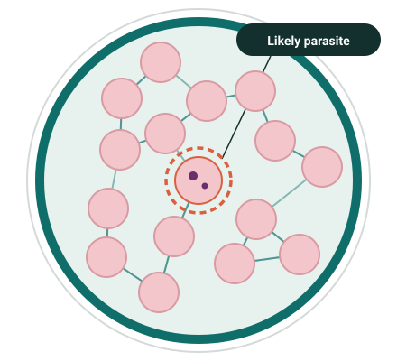

Helping understaffed clinics read malaria slides like a specialist
I am a final year Computer Science student at Uganda Christian University. My research is building a small AI model that looks at photos of thick blood smears and points out likely malaria parasites, so that a trained person can check them faster. It is designed to run offline on an ordinary Android phone in clinics that have few trained microscopists.

The problem
Looking at a stained drop of blood under a microscope is the standard test for malaria, but many rural clinics in Uganda have too few trained staff to read slides quickly [2], [3].
My approach
The model looks at each cell together with the cells around it, the way a microscopist does. A larger model then teaches a smaller one that is light enough for a phone.
Built for low-resource settings
Designed for a 4 GB RAM Android phone and trained only on Ugandan images collected at Mulago National Referral Hospital [3], [7].
Sources
Numbers match the reference list of my approved research proposal.
- [2] R. Nakasi, E. Mwebaze, A. Zawedde, J. Tusubira, B. Akera, and G. Maiga, “A new approach for microscopic diagnosis of malaria parasites in thick blood smears using pre-trained deep learning models,” SN Applied Sciences, vol. 2, p. 1255, 2020.
- [3] R. Nakasi, E. Mwebaze, and A. Zawedde, “Mobile-aware deep learning algorithms for malaria parasites and white blood cells localization in thick blood smears,” Algorithms, vol. 14, no. 1, p. 17, 2021.
- [7] J. A. Quinn, R. Nakasi, P. K. B. Mugagga, P. Byanyima, W. Lubega, and A. Andama, “Deep convolutional neural networks for microscopy-based point of care diagnostics,” in Proc. 1st Machine Learning for Healthcare Conf., PMLR vol. 56, 2016, pp. 271–281.